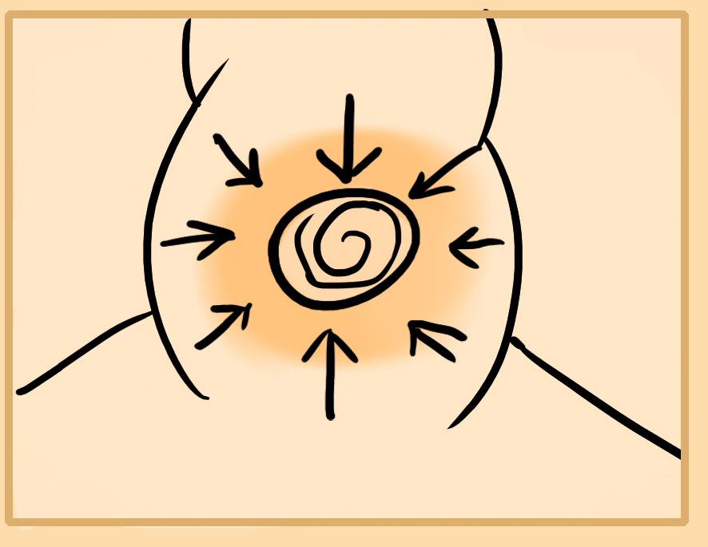

Here I will go more in depth on some of your energy centers, their meditations and what will happen if stimulated.
Earth Gate Center
This one's your asshole, the root of earth. It's where the two main meridians on the front and back of your body come from.
If you focus here and train this center it gives you a lot of physical grounding, stability, lets you see reality as it is, locks you more into the physical world, calms, heals the body, builds a thicker skin, more resilience to the world and aids bowel and anal issues as well as pelvic floor problems. Usually this center is the first to go weak and become diseased for humans through age, drug use, improper activities, etc.
Simply focus lightly on your anus to meditate on this center. Don't tense it, strain or stress. Sit and focus here. You will notice it aids you in being able to sit longer.
Sacral Center
This is your bladder. Focusing here can aid with clearing out guilt and shame, sexual trauma, excessive sexual desire or a lack of it, dangerous or bad sexual habits, practices and fetishes.
It helps to clear the emotions and reduce thyroid problems, as well as lymph and water issues in the body. This center helps to heal the rest of your body through the use of water. It also helps you to fix issues related to pleasure.
Belly Center
Here is the cauldron that fuses yin and yang in the body. It creates a special kind of powerful energy that you can circulate through the body. Though this center also controls digestion so focusing there can aid it in moving the digestion along as well as relaxing excessive stomach acids or bloating in the body.
This center a can also help to warm you up and create hot energy. It is where you gather lots of energy for circulating out.
Heart Center
This one is a focus location to work on breath, calm the heart and calm excessive stimulation and anxiety. Also to defend against external emotional attacks.
A lot of yang energy can be created here due to the heart sitting here. This means the generation of a lot of pressure. You can use this to direct force of passion and emotion outside of you. Focusing here also allows you to control and feel the arteries, veins and bloodflow.
Throat Center
This is around the pit of the throat. It loosens your throat and allows for words to come out smoother. Put a bit of focus here if you're giving a speech or need to say something delicate or complex. This center also can relax the neck and head.
The naval center is how you use kiais or voice attacks. But its power does run through this area, your throat.
Third Eye/Mid Head Center
Focusing in this center grants clear vision, thought, hearing and other senses. It also lets you think much quicker and better and is good for performing magic. You can imagine well if awareness is positioned here.
Also relaxing it helps headache or head burnouts. Creativity as well improves if one is put here.
Crown Center
Tense your anus and feel the top of the head. This center pulses when you do that. The earth gate and heavenly gate or crown are both counter sides of the same pole. This one being positive.
This center grants clarity of all kinds, relaxation and bliss and peace. Along with the mid head center it grants a form of enlightenment.
Core Forming
While you can focus in your spiritual centers to stimulate them, there is also a technique to form permanant energy centers known as core forming.
Usually you only form cores in certain areas depending on where you want to have immense amounts of energy. Generally you form one in the belly region as this is the safest and simplest place to create it. Though you can also make one in your head for example and other areas.
To do this, start gathering energy into your naval. Compress this energy into a ball shape, a bit smaller than a basketball size. It takes a while to do, you just have to keep holding and compressing, drawing in energy continuously. This can take about 15-30 minutes+ to really form. Don't overly stress or strain though.
Eventually you will begin to feel a mass or center form within your abdomen. This will stay and you will always have a center of energy to draw from or draw into. You can now use this center as your primary energy center.
Mingmen - Life Gate
This point is around your mid back where the kidneys rest. This point transmutes lowers energies and fluids upwards. It can also warm the body, ease anxiety and aid in sexual issues like premature ejaculation or a lack of moisture.
Root Center
This is different from your anus. For males it is the prostate at the base of the penis in the perineum. For women I believe that it is the womb.
Focus at this center to ease fertility issues and some sexual and life traumas. It can help prostate and womb issues by tonifying and relaxing this area which can build up a lot of tension.
Notes
Center meditation is more internal, contrast to the flesh, muscle, meridian and other external meditations.